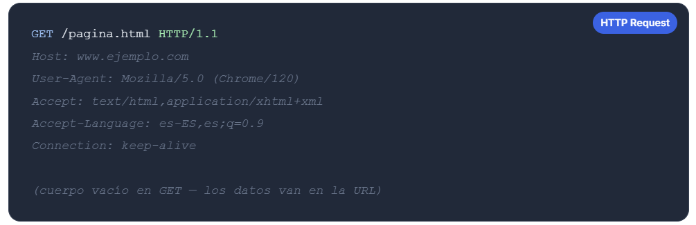

💡 Protocolo sin estado
HTTP es un protocolo sin estado: cada solicitud es independiente
y el servidor no "recuerda" solicitudes anteriores.
Por eso existen las cookies y sesiones.
📡 Solicitud HTTP
El lenguaje que usan los navegadores y servidores para comunicarse en la Web.
Paso 2 de 5
HTTP (HyperText Transfer Protocol) es el protocolo de comunicación que permite la transferencia de información en la Web. Cuando tu navegador quiere obtener una página, envía una solicitud HTTP al servidor; el servidor responde con los datos solicitados.
La versión segura, HTTPS, cifra toda la comunicación usando TLS, protegiendo tus datos de posibles interceptaciones. Hoy en día, todos los sitios modernos deberían usar HTTPS.

Los métodos HTTP definen la acción que el cliente quiere realizar sobre un recurso del servidor. Son el vocabulario de la comunicación web.
| Método | Descripción | Cuándo se usa |
|---|---|---|
| GET | Obtiene un recurso del servidor sin modificarlo. | Cargar páginas, imágenes, descargar archivos. |
| POST | Envía datos al servidor para crear un nuevo recurso. | Registrar usuario, enviar formulario, subir archivo. |
| PUT | Reemplaza completamente un recurso existente. | Actualizar un perfil, reemplazar un documento. |
| DELETE | Elimina un recurso del servidor. | Borrar cuenta, eliminar publicación, quitar producto. |
Así se ve una solicitud HTTP real cuando tu navegador pide una página web:
La primera línea indica el método (GET), el recurso solicitado (/pagina.html) y la versión del protocolo. Las siguientes líneas son cabeceras que dan información adicional al servidor: el dominio, el tipo de navegador, los idiomas aceptados, etc.
Para profundizar más, visita la documentación oficial de MDN Web Docs:
📚 Documentación HTTP en MDN →